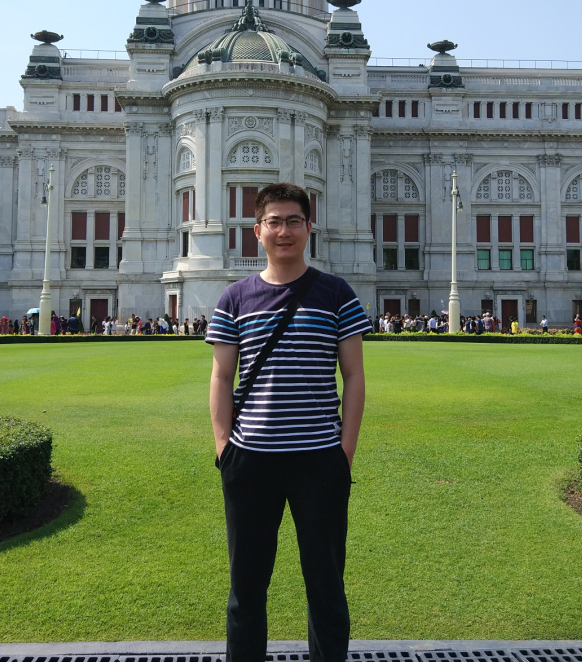

|
Lyu Chen

|
Chen Lyu
PhD in Computer software and theory, Associate professor in the School of Information Science and Engineering of Shandong Normal University,
Master's supervisor
Address:
1-302, Wenzong Building Lake Campus,
Shandong Normal University
Email:
lvchen@sdnu.edu.cn
QQ:187169052
|
Chen Lyu, male, graduated from Institute of Computing Technology, Chinese Academy of Sciences, with a PhD in Computer Software and Theory in 2015, who is currently
an associate professor and master's supervisor in the School of Information Science and Engineering of Shandong Normal University. I have served as an expert in
reviewing projects of National Natural Science Foundation of China and China Postdoctoral Foundation, as a member of CCF Special Committee on Collaborative Computing,
as a member of CCF YOCSEF Jinan, as a member of Shandong Provincial Special Committee on Intelligent Science and Technology, and as a program member of ATC, NCSC,
CSCW and other academic conferences. Currently, I have supervised/trained more than 10 master students. I have guided students to receive excellent master's thesis,
excellent undergraduate graduation design, national college student innovation and entrepreneurship project, the second national prize of the Blue Bridge Cup National
Software and Information Technology Professional Competition, and the first provincial prize of the National College Student Mathematical Modeling Competition.
I was awarded the Excellent Teaching Award of Shandong Normal University in 2020, the Third Prize of Teaching Achievement Award of Shandong Normal University, etc.
Research Interests
-
Software Engineering
This topic belongs to the intersection of artificial intelligence and software engineering, researching machine learning-based program analysis,
understanding and recommendation. It aims to use data mining, machine learning, natural language processing and other technologies to extract
effective knowledge from software data and convert it into automated tools (such as automatic program generation, summary or error correction,
etc.) to enhance the automation and intelligence of software development and testing in order to solve practical problems in the field of software
engineering. The topic is mainly related to the direction of machine learning, software engineering and natural language processing.
-
Computer Vision and Data Science
The subject includes 1) fast perception and recognition of video content: research on automatic summary, real-time recognition and detection of
abnormal events or behaviors based on video data analysis, mainly involving pattern recognition, multimedia information processing and other directions.
2) image processing: research on image recovery and enhancement, saliency detection, mainly involving pattern recognition, deep learning and other directions;
3) intelligent management of cloud platform services: research on joint sensing and state monitoring of cloud services based on cloud monitoring data analysis,
mainly involving cloud computing, service computing, big data analysis and other directions.
Recent Publications
* alphabetic ordering of authors
-
TreeBERT: a tree-based pre-trained model for programming language,
by Jiang Xue, Zheng Zhuoran, Lyu Chen*, Li Liang, Lyu Lei,
In Proceedings of 37th Conference on Uncertainty in Artificial Intelligence (UAI 2021), July 2021.
-
Graph-based structural difference analysis for video summarization,
by Chunlei Chai, Guoliang Lu, Ruyun Wang, Chen Lyu, Lei Lyu, Peng Zhang, Hong Liu,
In Proceedings of Informatics and Computer Science Intelligent Systems Applications (INS 2021), July 2021.
-
Embedding API dependency graph for neural code generation,
by Chen Lyu, Ruyun Wang, Hongyu Zhang, Hanwen Zhang, Songlin Hu,
In Proceedings of Empirical Software Engineering (EMSE 2021), March 2021.
-
A Multi-Module Based Method for Generating Natural Language Descriptions of Code Fragments,
by Gao Xuejian, Jiang Xue, Wu Qiong, Wang Xiao, Lyu Lei, Lyu Chen*,
In Proceedings of Institute of Electrical and Electronics Engineers Access (IEEE Access21), February 2021.
-
Fret: Functional Reinforced Transformer With BERT for Code Summarization,
by Wang Ruyun, Zhang Hanwen, Lu Guoliang, Lyu Lei, Lyu Chen*,
In Proceedings of Institute of Electrical and Electronics Engineers Access (IEEE Access20), July 2020.
-
A virtual end-to-end learning system for robot navigation based on temporal dependencies,
by Zhang Yanqiu, Ge Ruiquan, Lyu Lei, Zhang Jinling, Lyu Chen, Yang Xiaojuan,
In Proceedings of Institute of Electrical and Electronics Engineers Access (IEEE Access20), July 2020.
-
A reliable method for colorectal cancer prediction based on feature selection and support vector machine,
by Zhao DanDan, Liu Hong, Zheng Yuanjie, He Yanlin, Lu Dianjie, Lyu Chen,
In Proceedings of Medical & biological engineering & computing (MBEC 19), April 2019.
-
Whale optimized mixed kernel function of support vector machine for colorectal cancer diagnosis,
by Zhao DanDan, Liu Hong, Zheng Yuanjie, He Yanlin, Lu Dianjie, Lyu Chen,
In Proceedings of Journal of biomedical informatics (JBIOBL 19), Apirl 2019.
-
An Image-Constrained Particle Filter for 3D Human Motion Tracking,
by Zhao Xiukai, Lyu Lei, Zhang Jinling, Lyu Chen,
In Proceedings of Institute of Electrical and Electronics Engineers Access (IEEE Access19), January 2019.
-
A new parallel simulation method for massive crowd,
by Zhao Xiukai, Lyu Lei, Lyu Chen, Ji Cun,
In Proceedings of International Conference on Identification, Information and Knowledge in thr Internet of Things (Procedia Comput Sci.19), January 2019.
-
Sparse Feature Learning With Label Information for Alzheimer’s Disease Classification Based on Magnetic Resonance Imaging,
by Xu Lina, Yao Zhijun, Li Jing, Lv Chen, Zhang Huaxiang, Hu Bin,
In Proceedings of Institute of Electrical and Electronics Engineers Access (IEEE Access19), January 2019.
-
A Declarative Service-Based Method for Adaptive Aggregation of Sensor Streams,
by Zhang Zhongmei, Liu Chen, Li Xiaohong, Han Yanbo, Lv Chen, Ding Weilong,
In Proceedings of Institute of Electrical and Electronics Engineers Access (IEEE Access18), December 2018.
-
Cost-effective coupled video distribution network,
by Chen Jing, Chen Zhigang, Lu Dianjie, Lyu Chen, Zhang Guijuan, Zheng Xiangwei, Liu Hong,
In Proceedings of Computer Supported Cooperative Work and Social Computing (CSCW 2018), July 2018.
-
An Efficient Graph-Search Algorithm for Full Link Application Suggestion,
by Zhang Haijie, Zeng Nan, Song Hu, Xu Menghan, Wang Huiyu, Yang Bo, Lyu Chen*,
In Proceedings of Computer Supported Cooperative Work and Social Computing (CSCW 2018), July 2018.
-
Key-frame selection for automatic summarization of surveillance videos: a method of multiple change-point detection,
by Gao Zhen, Lu Guoliang, Lyu Chen, Yan Peng,
In Proceedings of Machine Vision and Applications (MVAPEO 18), June 2018.
-
Automatic change detection for real-time monitoring of EEG signals,
by Gao Zhen, Lu Guoliang, Yan Peng, Lyu Chen, Li Xueyong, Shang Wei, Xie Zhaohong, Zhang Wanming,
In Proceedings of Computational Physiology and Medicine (Front Physiol18), April 2018.
-
Efficient dynamic evolution of service composition,
by Lv Chen, Jiang Wei, Hu Songlin*, Wang Jiye, Lu Guoliang, Liu Zhiyong,
In Proceedings of Institute of Electrical and Electronics Engineers (IEEE 18), August 2018.
-
A new method of real-time detection of changes in periodic data stream,
by Lyu Chen, Lu Guoliang, Cheng Bin, Zheng Xiangwei,
In Proceedings of Ninth International Conference on Digital Image Processing (ICDIP 2017), July 2017.
-
APISynth: a new graph-based API recommender system,
by Lyu Chen, Jiang Wei, Liu Yue, Hu Songlin,
In Proceedings of International Conference on Software Engineering (ICSE 2014), May 2014.
-
面向动态环境的复合服务自适应方法, 吕晨, 姜伟, 虎嵩林* 计算机学报, 2016年02月.
-
一种基于新型图模型的 API 推荐系统, 吕晨, 姜伟, 虎嵩林* 计算机学报, 2015年11月.
-
采用元组聚类的增量式数据分区方法, 吕晨, 房俊, 韩燕波 计算机科学与探索, 2011年08月.